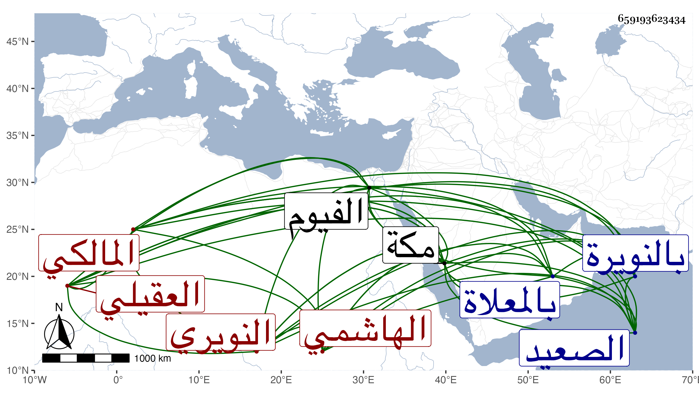

0902Sakhawi.DawLamic.ITO20230111-ara1.EIS1600.659193623434
Biography ID: 659193623434
241
عبد الرحمن بن عبد العزيز بن محمد بن أحمد بن عبد العزيز بن القسم ابن الشهيد الناطق عبد الرحمن الرضي بن العز بن الشمس الهاشمي العقيلي النويري المالكي نزيل مكة ووالد علم الدين محمد الآتي ، ولد بالنويرة من الصعيد وانتقل مع أمه إلى الفيوم فحفظ بها القرآن والعمدة والرسالة وألفية النحو ثم عاد بعد كبره إلى بلده ، وحج غير مرة وجاور وسمع بها من الزين المراغي ثم قدم مكة في موسم سنة أربع وأربعين وجاور التي تليها فأدركه أجله بها وهو ساجد بالمسجد الحرام في ذي الحجة منا فحمل إلى بيته فجهز ثم دفن بالمعلاة ، وكان خيرا ساكنا .
